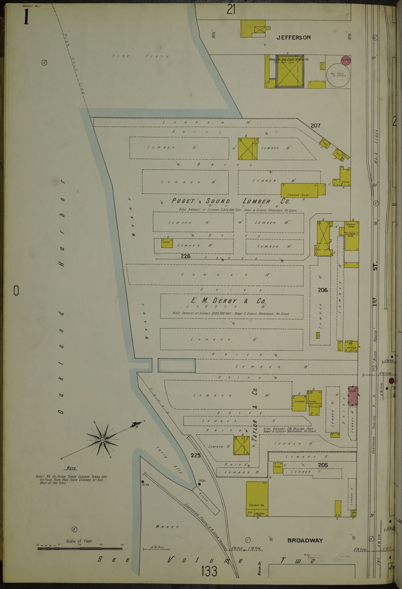

Introduction
Write the article text here. Paragraphs go inside p tags. A footnote marker looks like this.1

More text. You can refer to Figure 1 with a link: Figure 1.
Notes
- Footnote text. Back
References
- Author, A. 2020. Title of work. Publisher. https://doi.org/10.0000/example